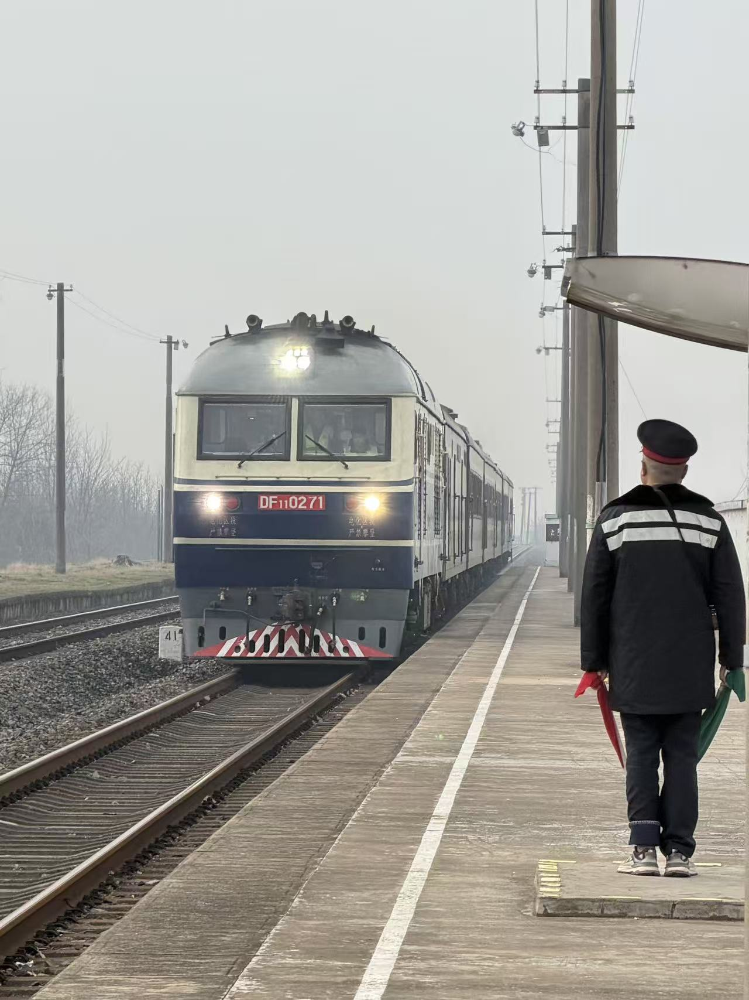
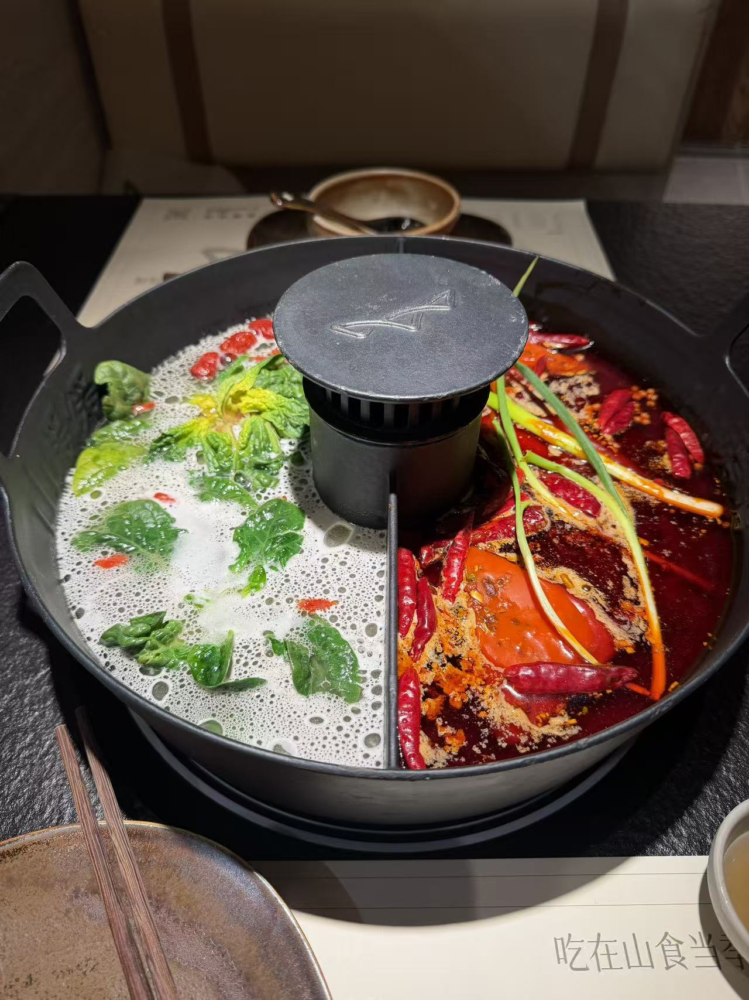
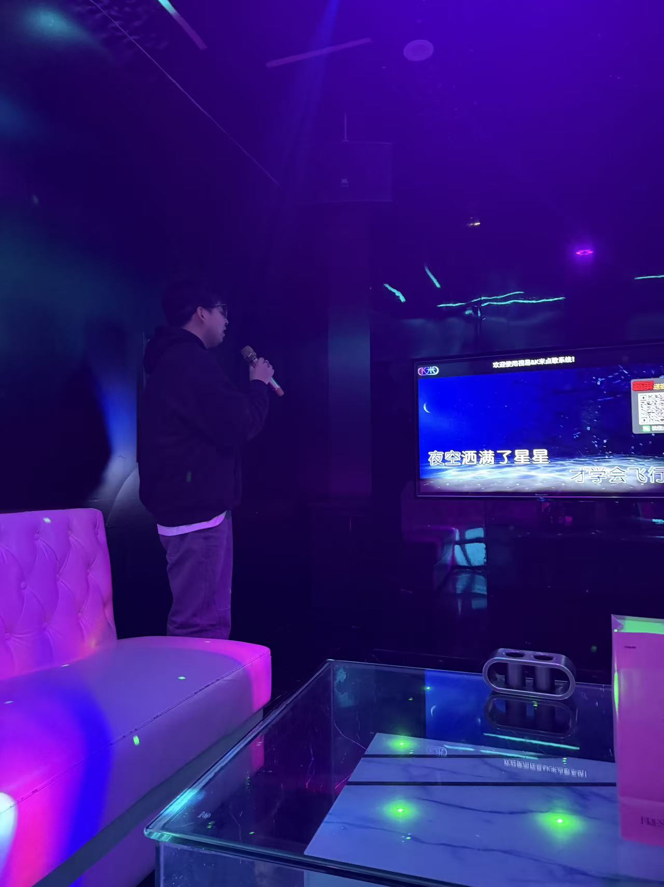
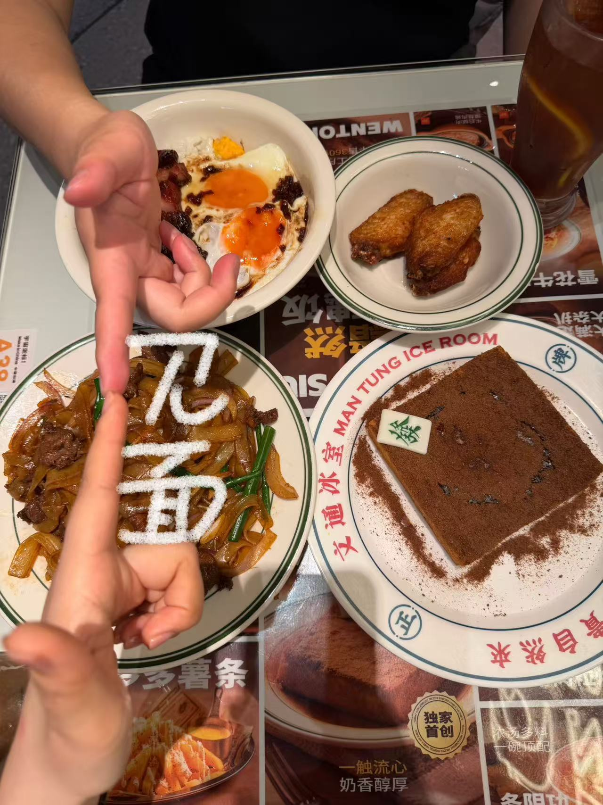
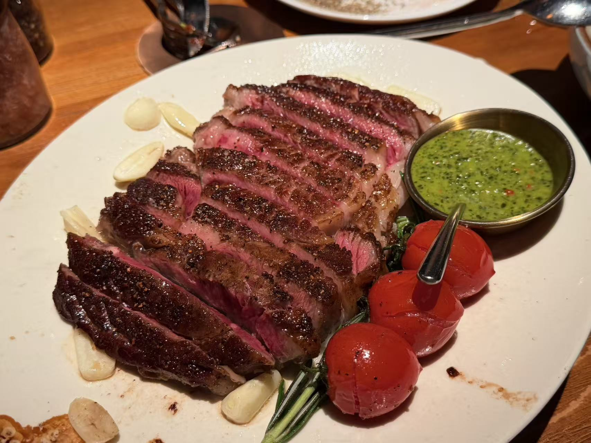
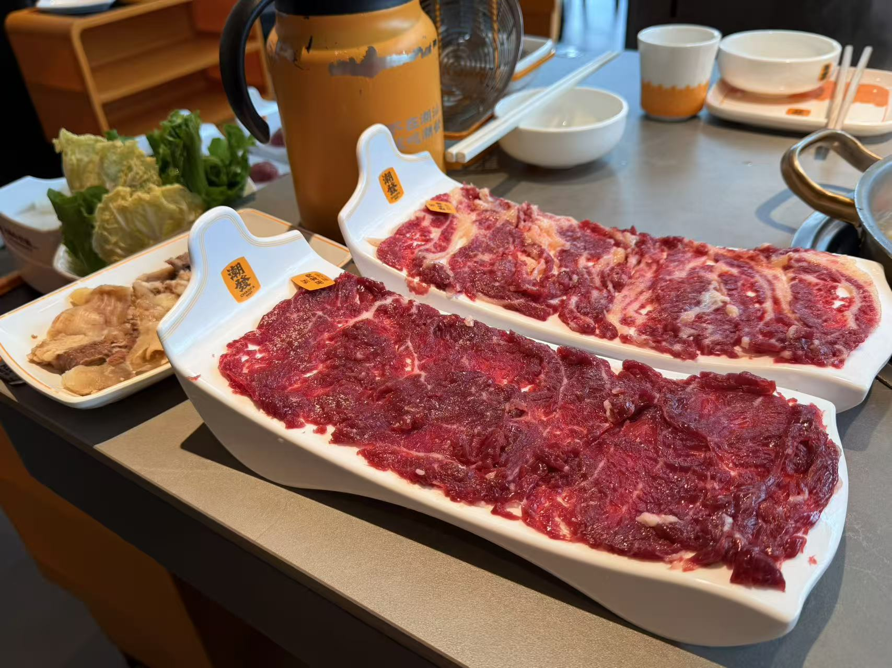
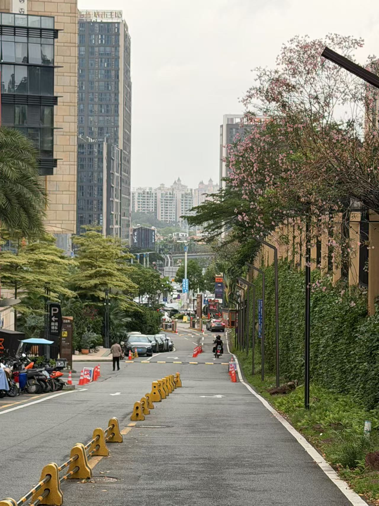

序章：时间的足迹
亲爱的小刘同志：
真没想到，一晃眼我们竟然已经认识三个月了。时间过得挺快，今天借着这个日子，想和你一起按下时光的回放键，看看这90天里，我们共同走过的轨迹。
2026.02.14
第一幕：一切的开始
2月14日，我们加上了微信。当时只有试探性的文字和有些生疏的问候，但那个小小的绿色聊天框，却悄悄连起我们后来的所有故事。
你好博士姐 👋
我好像比你小 🌹
一开始觉得你好冒昧哈哈哈...
2026.02.19
第二幕：扬州仪征 · 初次碰面
加上微信没几天，去扬州见你了。有些局促的初见，围着热气腾腾的火锅聊天，还有KTV里的歌声和清晨的小笼包。仪征很好，更开心的是见到了你。。



2026.04.11
第三幕：广州 · 跨越距离
这一次，轮到你跨越一千多公里来广州找我。我们把时间都花在了探寻岭南美食上。快乐的时间总是不够用，最后分别的时候，心里满是不舍。




2026.04.25
第四幕：苏州 · 特别的重逢
我去苏州参加会议，你特意开车赶来见我。精致的日料、地道的浇头面，还有烤盘上滋滋作响的烤肉，组成了我们在苏州的独家记忆。可我还是担心你开车会很累...
2026.05.01
第五幕：特殊的长假
五一长假，你和你的家人来到了我家。听着屋里的欢笑声，突然觉得好不真实。而在家里看着你毫无防备的安心睡脸，那一刻，突然对未来有了期待。


尾声：故事未完待续
坐下来整理这些碎片时，连我自己都惊讶，
原来短短三个月我们已经一起跨越了这么多城市，一起吃过这么多顿饭。
小刘同志很高兴认识你，希望我们互相珍惜。
期待在未来的日子里，继续续写属于我们的故事。
520快乐，小刘同志！🌹
✨ 我们的故事才刚刚开始 ✨